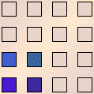
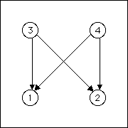
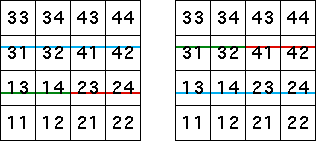

| Let's try to generate the lower of the two lines without the upper. |
| Looking at the length 2 address squares |
 |
| we see these transitions must be allowed |
| 3 → 1, 4 → 1, 3 → 2, and 4 → 2 |
| Here are the table and graph. From the graph it should be clear that this
IFS generates no picture at all. |
|  |
 |
 |
|
| The lower line of this pair cannot be generated by itself. Similarly, the
upper line cannot be generated alone. |
| This pair of lines can be prodcued only as a unit. |
| For another way to see this, observe that the lower line consists of
T1(upper line) and
T2(upper line). |
| Similarly, the upper line consists of
T3(lower line) and
T4(lower line). |
|  |